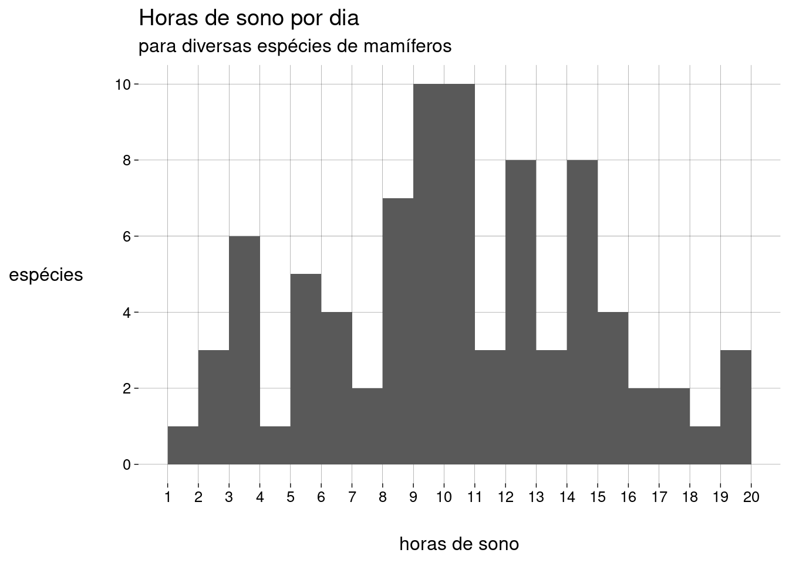

Capítulo 6 Medidas
6.2 Medidas de centralidade
6.2.1 Média
-
A média de uma população é escrita como \(\mu\), e é definida como \[\mu = \frac{\sum_{i=1}^N x_i}{N}\]
\(\sum_{i=1}^N x_i\) é a soma de todos os dados da população.
\(N\) é a quantidade de elementos na população.
-
A média de uma amostra é escrita como \(\bar x\), e é definida como: \[\bar x = \frac{\sum_{i=1}^n x_i}{n}\]
\(\sum_{i=1}^n x_i\) é a soma de todos os dados da amostra.
\(n\) é a quantidade de elementos na amostra.
O cálculo é essencialmente o mesmo. Só mudam os símbolos: \(N\) versus \(n\), e \(\mu\) versus \(\bar x\).
6.2.2 Mediana
Já aprendemos sobre a mediana na seção sobre boxplots.
A idéia é que, depois de ordenar os dados, \(50\%\) dos dados estarão à esquerda da mediana, e \(50\%\) à direita.
A mediana não é tão sensível a outliers quanto à média.
6.2.3 Moda
A moda é o valor mais frequente do conjunto de dados.
Pode haver mais de uma moda.
Não existe uma função para a moda em R base. Por quê?
Por incrível que pareça, é complicado definir a moda de forma a conseguir resultados interessantes.
-
Por exemplo, vamos definir um conjunto de \(1000\) valores numéricos distribuídos normalmente4, com média igual a \(5\) e desvio-padrão5 igual a \(2\):
normal <- rnorm(1000, mean = 5, sd = 2) -
O histograma dos nossos dados é

-
Vamos calcular a moda com a função
mfv(most frequent value), do pacotemodeest:## Registered S3 method overwritten by 'rmutil': ## method from ## print.response httr# Por causa de um bug na função mfv, # precisamos de números com ponto decimal # (em vez de vírgula): options(OutDec = '.') mfv(normal)## [1] -3.61634243 -1.10536056 -1.01297008 -0.87442425 -0.65940181 -0.50750539 ## [7] -0.42849493 -0.32903145 -0.09147399 0.15376665 0.20572628 0.24257659 ## [13] 0.35572131 0.37198867 0.43413656 0.50744959 0.50905250 0.53313064 ## [19] 0.53371397 0.56678817 0.60005824 0.80905303 0.87385320 0.88422840 ## [25] 0.92690295 0.93891403 0.94962015 0.97337974 0.98336596 0.98830518 ## [31] 0.99982549 1.05599134 1.12024063 1.14020971 1.17416167 1.19810368 ## [37] 1.21860276 1.34318589 1.39937689 1.39973650 1.40163962 1.42244192 ## [43] 1.45846247 1.48635771 1.49211166 1.49258023 1.54629444 1.56976271 ## [49] 1.58647793 1.60463195 1.62027008 1.62052944 1.64612818 1.66633775 ## [55] 1.68091459 1.68896448 1.71380414 1.71760620 1.74842960 1.77472709 ## [61] 1.80163447 1.80787819 1.83980819 1.84825465 1.88479377 1.89428987 ## [67] 1.97870556 2.00088279 2.00549011 2.00803410 2.01024297 2.02950580 ## [73] 2.04151114 2.06187554 2.06843620 2.07924569 2.13933917 2.14376143 ## [79] 2.16687615 2.18010748 2.19938345 2.20601963 2.23272186 2.24209144 ## [85] 2.24655140 2.24864161 2.26177885 2.27444936 2.28617654 2.28753401 ## [91] 2.29229459 2.30674286 2.30754682 2.33582239 2.34148453 2.34226543 ## [97] 2.35272274 2.35479405 2.37183095 2.37246783 2.39416871 2.41921391 ## [103] 2.42497418 2.43308248 2.44514335 2.45473904 2.45649172 2.47184214 ## [109] 2.47199636 2.48806303 2.48979099 2.49945793 2.52480312 2.52846243 ## [115] 2.53863921 2.54158527 2.55331061 2.56233031 2.57980700 2.58528831 ## [121] 2.58608402 2.64612428 2.66346319 2.66737978 2.67585683 2.68099296 ## [127] 2.69901617 2.71618746 2.72848798 2.73261444 2.75728590 2.75938474 ## [133] 2.76769911 2.78933483 2.80959107 2.81716371 2.82740383 2.83771981 ## [139] 2.83972613 2.85965570 2.86414893 2.86742604 2.87184594 2.87944853 ## [145] 2.88482948 2.89939150 2.89971003 2.92509894 2.93724670 2.94305236 ## [151] 2.94953164 2.95260087 2.95532621 2.97518467 2.98475043 2.98896933 ## [157] 2.99015880 3.00520965 3.01153279 3.01778428 3.02366035 3.02557030 ## [163] 3.03287850 3.03466840 3.03679994 3.07567515 3.10838885 3.10907428 ## [169] 3.12186695 3.14785169 3.15360742 3.16778267 3.17191836 3.17417737 ## [175] 3.18520294 3.19117391 3.19437674 3.20048501 3.21289105 3.21666159 ## [181] 3.21812299 3.22181794 3.23133044 3.24884312 3.25297249 3.26013817 ## [187] 3.26023496 3.26811995 3.27180155 3.28074598 3.28213344 3.28913677 ## [193] 3.29913231 3.30879719 3.34539834 3.34616664 3.34833624 3.34968992 ## [199] 3.34992611 3.35797098 3.37196496 3.37211283 3.39255018 3.40079339 ## [205] 3.40256290 3.40674980 3.41152482 3.41308211 3.41542935 3.41742207 ## [211] 3.43229696 3.43960305 3.45221068 3.46899959 3.47181497 3.47250099 ## [217] 3.47771178 3.48230487 3.48743514 3.49278852 3.49368665 3.49745364 ## [223] 3.50004644 3.51174130 3.52004705 3.52584424 3.53347971 3.53837776 ## [229] 3.54591459 3.54630628 3.55882389 3.55988908 3.56198746 3.56318159 ## [235] 3.56547242 3.56875566 3.57072066 3.58749668 3.60729905 3.61153102 ## [241] 3.61707434 3.62288535 3.62785681 3.64985066 3.65240440 3.66028588 ## [247] 3.66137665 3.67063131 3.67988155 3.68013434 3.68665783 3.69823968 ## [253] 3.70081298 3.70578011 3.70605009 3.71290281 3.71812697 3.72061108 ## [259] 3.72173568 3.72997282 3.73620873 3.73677397 3.74986616 3.76021174 ## [265] 3.76347243 3.77396084 3.78676850 3.79873261 3.80235957 3.80292899 ## [271] 3.80444391 3.80725371 3.82169111 3.82550497 3.82896896 3.83407244 ## [277] 3.83464191 3.83689712 3.84912941 3.85191914 3.85539629 3.86804276 ## [283] 3.87046920 3.89810646 3.89841219 3.90611698 3.90750692 3.90851185 ## [289] 3.90973870 3.93884030 3.94183392 3.94348620 3.94825165 3.95307476 ## [295] 3.95830120 3.96653036 3.96769475 3.97711388 3.98336495 3.99094945 ## [301] 4.00560146 4.01681561 4.01974961 4.02388259 4.02739469 4.03159375 ## [307] 4.03456387 4.03528641 4.04106413 4.04761001 4.05267216 4.05860274 ## [313] 4.06387139 4.06458855 4.06762783 4.06889002 4.07300262 4.07326234 ## [319] 4.07962599 4.10307584 4.10727634 4.11204402 4.12299829 4.12504824 ## [325] 4.13430757 4.15171834 4.15683803 4.17372344 4.17501604 4.18175404 ## [331] 4.18834024 4.19930331 4.20382889 4.21069034 4.21598334 4.21874463 ## [337] 4.22132999 4.22717559 4.23243933 4.23347195 4.23787448 4.24232452 ## [343] 4.24236189 4.24807401 4.26192470 4.26207640 4.26593183 4.26720078 ## [349] 4.26785966 4.27252014 4.27466970 4.27647094 4.28128238 4.28350292 ## [355] 4.29220338 4.29730861 4.30413146 4.30414725 4.30842584 4.30946613 ## [361] 4.31898446 4.32050407 4.32937093 4.33446135 4.33474296 4.34104083 ## [367] 4.34568144 4.37088750 4.37661981 4.37986342 4.38095707 4.41285754 ## [373] 4.41299252 4.41313434 4.41545580 4.44490815 4.45031758 4.45519193 ## [379] 4.48128674 4.48319907 4.49091112 4.49234820 4.49238948 4.49333427 ## [385] 4.50017716 4.51021476 4.51542816 4.52244753 4.53664127 4.54068505 ## [391] 4.54073892 4.54486190 4.54636686 4.57206796 4.57389222 4.57535941 ## [397] 4.58410691 4.59369847 4.59548569 4.61002981 4.61927713 4.62259033 ## [403] 4.63855402 4.65497367 4.65781112 4.65833506 4.66157394 4.66174265 ## [409] 4.67876135 4.68806803 4.68988939 4.69086460 4.69277452 4.69836727 ## [415] 4.70682950 4.71482511 4.71902358 4.72170999 4.72684222 4.73048858 ## [421] 4.73353582 4.73802590 4.74311753 4.74605810 4.74669795 4.74879177 ## [427] 4.75291608 4.75322925 4.75484861 4.75710314 4.76190819 4.76842413 ## [433] 4.77477088 4.77541499 4.77693993 4.77914175 4.77979319 4.77997437 ## [439] 4.78385192 4.78447268 4.78620158 4.79324471 4.80089662 4.80399516 ## [445] 4.80843758 4.81225358 4.81436651 4.81882937 4.82126672 4.82458041 ## [451] 4.83033095 4.83124911 4.83795336 4.84616950 4.85569584 4.87900215 ## [457] 4.88152704 4.88464966 4.88519362 4.89077440 4.89188558 4.89266225 ## [463] 4.89315849 4.89593318 4.89796104 4.90754640 4.90950572 4.91440227 ## [469] 4.92263783 4.92371956 4.92526886 4.93840431 4.94604688 4.94733516 ## [475] 4.94830070 4.95335498 4.95479178 4.98017091 4.98303134 4.98863362 ## [481] 4.98881455 4.99064010 4.99118863 4.99251898 5.00005018 5.00245136 ## [487] 5.02269916 5.02460331 5.02534714 5.02645538 5.02680948 5.02974349 ## [493] 5.04338511 5.04351222 5.05014005 5.05134859 5.05200758 5.05391881 ## [499] 5.05706678 5.05810418 5.05813400 5.06806323 5.07040829 5.07982873 ## [505] 5.08504609 5.08882348 5.08885184 5.09041271 5.09501106 5.10084254 ## [511] 5.10825801 5.10907496 5.11603129 5.12047958 5.13672920 5.14185928 ## [517] 5.14231735 5.14392056 5.14956515 5.15051402 5.15291689 5.16166904 ## [523] 5.16677135 5.18787194 5.18993592 5.19559751 5.20199327 5.20567094 ## [529] 5.21307493 5.21825580 5.22137064 5.22885574 5.23043160 5.23129183 ## [535] 5.23224245 5.23934090 5.24025997 5.24527548 5.25007811 5.25106602 ## [541] 5.25986246 5.26010710 5.26314873 5.26867622 5.27064161 5.27211850 ## [547] 5.27616563 5.29032906 5.29797160 5.31312733 5.31416088 5.31952804 ## [553] 5.31987806 5.32693115 5.33173778 5.34590619 5.34809677 5.34840877 ## [559] 5.35304961 5.36370791 5.40175364 5.41245970 5.41435749 5.42173373 ## [565] 5.42528867 5.43656300 5.44006511 5.44024304 5.45342658 5.45702020 ## [571] 5.47238827 5.47662769 5.47829034 5.47829383 5.48883353 5.49308072 ## [577] 5.50364208 5.50640053 5.51004620 5.51103933 5.52202531 5.52204448 ## [583] 5.52226880 5.52780571 5.53214844 5.53498085 5.54227370 5.55655579 ## [589] 5.55828664 5.58087119 5.58808506 5.59362498 5.60376428 5.60546826 ## [595] 5.61567601 5.61664451 5.62389587 5.62978193 5.63412078 5.65651652 ## [601] 5.67057703 5.67164021 5.67368196 5.67446838 5.68125642 5.68391872 ## [607] 5.69413623 5.69489487 5.70034355 5.70085305 5.72175372 5.72281566 ## [613] 5.72881566 5.73919401 5.73934278 5.75169688 5.75729549 5.76539634 ## [619] 5.76611557 5.77189684 5.79064342 5.79140329 5.79899976 5.79932846 ## [625] 5.80605741 5.81709948 5.81996367 5.82323405 5.82405811 5.83365060 ## [631] 5.83797963 5.83956627 5.84126550 5.84833315 5.84848297 5.86141236 ## [637] 5.86193668 5.86297438 5.86402597 5.86464614 5.86514127 5.86777635 ## [643] 5.87002190 5.87021230 5.87093715 5.87124040 5.87379693 5.88197771 ## [649] 5.88642806 5.88676417 5.88882899 5.89026381 5.90236317 5.90391548 ## [655] 5.91972626 5.92101547 5.92195854 5.92497073 5.92669367 5.93189389 ## [661] 5.93256810 5.93384590 5.93805064 5.94095076 5.96060082 5.96194937 ## [667] 5.96583005 5.96805130 5.97390329 5.97748862 5.98196115 5.98402898 ## [673] 5.98956161 5.99455181 5.99880925 6.00060428 6.00236783 6.00623648 ## [679] 6.00961043 6.02051871 6.02293978 6.02537266 6.02723493 6.03437310 ## [685] 6.03583513 6.03803751 6.04185608 6.04503127 6.05424010 6.05584236 ## [691] 6.05595073 6.07156072 6.07567790 6.08834327 6.09171574 6.09213081 ## [697] 6.09289663 6.09726692 6.10282435 6.10573318 6.10978396 6.12774017 ## [703] 6.13386698 6.13537882 6.13760331 6.13918471 6.14078134 6.14183134 ## [709] 6.14649667 6.16352419 6.16866054 6.17777654 6.17906271 6.22607482 ## [715] 6.24353015 6.24430678 6.24827228 6.24865247 6.25501860 6.26000424 ## [721] 6.26142418 6.27258184 6.27693849 6.27931557 6.28610373 6.29495232 ## [727] 6.29680248 6.30044384 6.30075172 6.30695347 6.32769311 6.33477062 ## [733] 6.34260590 6.35126160 6.35784763 6.35817384 6.35955368 6.36200054 ## [739] 6.36324139 6.36450755 6.36978236 6.37709757 6.38095002 6.38332030 ## [745] 6.38923014 6.39712680 6.39752279 6.40175649 6.40656649 6.40935754 ## [751] 6.41279555 6.41976663 6.42001402 6.42241808 6.43029558 6.44662692 ## [757] 6.45290154 6.46005992 6.46337886 6.48206462 6.48357718 6.49122822 ## [763] 6.49545028 6.50640946 6.51260812 6.51873769 6.52019287 6.52057233 ## [769] 6.54696186 6.54966565 6.55343326 6.55555356 6.56569979 6.56857549 ## [775] 6.57022282 6.58578419 6.59654863 6.61920414 6.64152587 6.65603213 ## [781] 6.66650297 6.68761170 6.69040609 6.69280511 6.70191346 6.70661281 ## [787] 6.70837322 6.71126824 6.71615521 6.72547796 6.73050222 6.73751123 ## [793] 6.73825527 6.74272725 6.75181668 6.75993407 6.76325073 6.76625401 ## [799] 6.76832768 6.77396329 6.77453541 6.79169775 6.79255339 6.80210357 ## [805] 6.80344513 6.80568679 6.80663328 6.81631912 6.82884825 6.83004506 ## [811] 6.83063517 6.83181726 6.83807308 6.83915601 6.84489677 6.84566505 ## [817] 6.84973592 6.85242232 6.85626192 6.85695064 6.85783374 6.85834843 ## [823] 6.86093575 6.86374636 6.86918410 6.87049742 6.87737372 6.89586301 ## [829] 6.90319679 6.90672441 6.91552956 6.93123770 6.93431890 6.93802368 ## [835] 6.94408860 6.94459247 6.94636428 6.95295984 6.96412465 6.97646556 ## [841] 6.97855333 6.98685257 6.98718666 6.99299477 7.00015379 7.00568834 ## [847] 7.01482212 7.01519189 7.01743609 7.01961936 7.04151215 7.05830511 ## [853] 7.06588873 7.07492822 7.09202378 7.09957638 7.10624595 7.11647081 ## [859] 7.12046661 7.13801134 7.16474299 7.17649122 7.17848787 7.19424896 ## [865] 7.20414545 7.22556871 7.22939297 7.23060132 7.23402628 7.25915592 ## [871] 7.26986841 7.27096545 7.27407529 7.28338985 7.29293158 7.31435513 ## [877] 7.32146169 7.33796477 7.34346569 7.35070855 7.35444047 7.36140958 ## [883] 7.36767503 7.37939624 7.38050414 7.39478928 7.39600967 7.42052366 ## [889] 7.42905537 7.43270058 7.43826272 7.45323143 7.46113598 7.46531247 ## [895] 7.46698380 7.47123877 7.47126417 7.47209669 7.47304595 7.47390905 ## [901] 7.47588978 7.48297222 7.48543413 7.48800912 7.50793605 7.52999116 ## [907] 7.55914818 7.56014199 7.60774685 7.61423846 7.62848233 7.64313365 ## [913] 7.66362014 7.67842644 7.68624500 7.68865237 7.73405001 7.73785041 ## [919] 7.74075605 7.74245154 7.75754117 7.75876365 7.77831506 7.78421277 ## [925] 7.78762440 7.78809406 7.80647918 7.82630629 7.82995940 7.85769857 ## [931] 7.86203961 7.87513064 7.88879167 7.89656503 7.92992210 7.93477764 ## [937] 7.96675636 8.03230135 8.04106832 8.04554339 8.06200110 8.07579847 ## [943] 8.07871923 8.08461229 8.10434479 8.10637064 8.11288688 8.11994199 ## [949] 8.13865484 8.15455178 8.18795380 8.19326326 8.20077460 8.20658923 ## [955] 8.24563276 8.24908857 8.24988178 8.26977619 8.27887518 8.29741399 ## [961] 8.33558381 8.33872745 8.37011479 8.39617127 8.40172922 8.44357227 ## [967] 8.47677411 8.54676791 8.56617738 8.57585418 8.62256074 8.65682090 ## [973] 8.68495119 8.69443817 8.71010429 8.76676834 8.79129556 8.87038329 ## [979] 8.90485266 8.90751532 8.92430805 8.94100515 9.01293963 9.04836092 ## [985] 9.05327939 9.16609423 9.25325815 9.39398608 9.55228067 9.57644230 ## [991] 9.64803371 9.70687432 9.77282817 9.82951576 9.89933193 10.08581549 ## [997] 10.08684272 10.11246673 10.37398234 10.62095850# Voltamos para a vírgula como separador decimal: options(OutDec = ',') O que houve?!
O problema é que não há valores repetidos no conjunto de dados! Por isso, todos os \(1000\) valores são modais.
-
Uma maneira de evitar isto é definir a moda como o centro do intervalo mais curto que contém metade dos dados. Usamos a função
mlv(most likely value):moda <- mlv(normal, method = 'venter') moda## [1] 5,525549 -
Esta moda estimada pode nem estar no conjunto de dados:
moda %in% normal## [1] FALSE Mas o resultado de
mlv()é útil, pois nos diz que, embora não haja valores repetidos, valores próximos de \(5\) são mais frequentes, como mostra o histograma.
6.2.3.1 Exercícios
-
Arrendonde os valores no vetor
normalpara \(2\) casas decimais e ache a(s) moda(s)com a função
mfv, ecom a função
mlv, usando o métodoventer.
Considerando o histograma, qual das respostas você prefere? Por quê?
6.3 Formas de uma distribuição
- A forma do histograma mostra aspectos importantes da distribuição dos dados.
6.3.1 Distribuição Uniforme
-
Se o histograma tem todas as barras aproximadamente da mesma altura, dizemos que a distribuição é uniforme:

A distribuição uniforme não tem moda, já que todos os valores têm aproximadamente a mesma frequência.
6.3.2 Simetria
Se o histograma for simétrico (i.e., os lados esquerdo e direito são “espelhados”), dizemos que a distribuição é simétrica.
A distribuição normal do exemplo acima é simétrica.
A distribuição uniforme também é simétrica.
-
Para distribuições simétricas, a média, a mediana e a moda (quando existe e é única) são bem próximas.
-
Uma distribuição pode ser simétrica, mas ter duas (ou mais) modas diferentes:

Algumas distribuições não são simétricas, mas têm uma cauda longa à esquerda ou à direita.
Dependendo da cauda, as distribuições são chamadas de assimétricas à esquerda ou assimétricas à direita.
-
Um exemplo: receitas anuais (em milhões de dólares) de CEOs de grandes empresas:
## Rows: 500 ## Columns: 9 ## $ Rank <dbl> 1, 2, 3, 4, 5, 6, 7, 8, 9, 10, 11, 12, 13, 14, 15, 16… ## $ Name <chr> "John H Hammergren", "Ralph Lauren", "Michael D Fasci… ## $ Company <chr> "McKesson", "Ralph Lauren", "Vornado Realty", "Kinder… ## $ `1-Year Pay ($mil)` <dbl> 131,190, 66,650, 64,405, 60,940, 55,790, 51,525, 50,1… ## $ `5 Year Pay ($mil)` <dbl> 285,020, 204,060, NA, 60,940, 96,110, 100,210, 90,300… ## $ `Shares Owned ($mil)` <dbl> 51,9, 5010,4, 171,7, 8582,3, 21,5, 47,3, 128,2, 155,8… ## $ Age <dbl> 53, 72, 55, 67, 59, 57, 55, 59, 61, 60, 59, 56, 63, 5… ## $ Efficiency <dbl> 121, 84, NA, NA, 138, 36, 12, NA, 91, 131, 150, NA, 1… ## $ `Log Pay` <dbl> 8,117901, 7,823800, 7,808920, 7,784902, 7,746556, 7,7… -
Vamos usar apenas os nomes e os valores anuais:
-
Um histograma:
salarios %>% ggplot(aes(x = valor)) + geom_histogram(breaks = seq(0, 150, 2.5)) + scale_x_continuous(breaks = seq(0, 150, 10)) + labs(y = NULL)
É uma distribuição assimétrica à direita: a maior parte dos CEOs têm receitas anuais “baixas”, de menos de \(10\) milhões. À medida que examinamos valores maiores, a quantidade de CEOs vai diminuindo lentamente.
Observe que a longa cauda à direita “puxa” a média para um valor mais alto do que a mediana.
-
A moda, que corresponde à barra mais alta do histograma, é menor que a mediana (e que a média):
sumario <- salarios %>% summarise( moda = mlv(valor, method = 'venter'), mediana = median(valor), media = mean(valor) ) sumario -
Em um boxplot, também é possível detectar a assimetria pela grande quantidade de outliers em um extremo:
salarios %>% ggplot(aes(y = valor)) + geom_boxplot() + scale_x_continuous(breaks = NULL) + scale_y_continuous(breaks = seq(0, 150, 10))
Com distribuições assimétricas à esquerda, a situação se inverte: a média é menor que a mediana, que é menor que a moda.
6.4 Re-expressão
Muitas vezes, é recomendável transformar a escala dos dados para que uma distribuição assimétrica se torne simétrica.
-
No exemplo das receitas dos CEOs, podemos tomar os logaritmos dos valores, em vez dos valores:
salarios_log %>% ggplot(aes(x = log_valor)) + geom_histogram(bins = 20) + labs( x = TeX('$\\log_{10}$ valor'), y = NULL )## Warning: Removed 3 rows containing non-finite values (stat_bin).
O logaritmo de um número na base \(10\) é, essencialmente, a quantidade de dígitos do número, vista como uma grandeza contínua.
Logaritmos negativos vêm de valores entre \(0\) e \(1\).
Logaritmo zero vem do valor \(1\).
Valores iguais ou menores que zero não têm logaritmo definido.
-
Por isso a mensagem de aviso sobre \(3\) valores removidos. São valores iguais a zero:
Uma vantagem desta escala logarítmica é que podemos entender melhor o histograma. Os dados não estão amontoados de um lado só.
6.5 Medidas de posição
6.5.1 Quantis
Na seção sobre boxplots, falamos sobre quantis, que são medidas de posição.
-
Em R, a função
quantilecalcula quantis de um vetor:## 0% 25% 50% 75% 100% ## 0,00000 3,88500 6,96750 13,36125 131,19000 -
Você pode passar frações entre \(0\) e \(1\) para
quantile. Por exemplo, para calcular o primeiro, o quinto, e o décimo percentis6 das receitas dos CEOs:## 1% 5% 10% ## 0,48695 1,48405 2,19400
6.6 Medidas de dispersão
Tão importantes quanto as medidas de centralidade são as medidas de dispersão (ou espalhamento).
Elas informam o quanto os dados variam.
6.6.1 Amplitude
Uma medida simples é a diferença entre o valor máximo e o valor mínimo.
-
Lembrando do nosso exemplo das idades dos alunos:
idades## [1] 20 20 20 20 20 20 21 21 21 21 22 22 22 23 23 23 23 24 24 65 -
A função
rangeretorna o mínimo e o máximo:range(idades)## [1] 20 65 -
A amplitude destes dados é, então
## [1] 45 A diferença de idade entre o aluno mais novo e o mais velho é de \(45\) anos, um valor alto, por causa do velhinho.
6.6.2 IQR
Na seção sobre boxplots, também falamos sobre o intervalo interquartil (IQR).
-
No boxplot, é a altura da caixa. Para as idades dos alunos:
idades %>% as_tibble() %>% ggplot(aes(y = value)) + geom_boxplot() + scale_x_continuous(breaks = NULL) + scale_y_continuous(breaks = seq(20, 70, 5))
-
O IQR é a diferença entre o primeiro e o terceiro quartis:
summary(idades)## Min. 1st Qu. Median Mean 3rd Qu. Max. ## 20,00 20,00 21,50 23,75 23,00 65,00## [1] 3IQR(idades)## [1] 3 Ou seja, os \(50\%\) centrais dos alunos têm idade entre \(20\) e \(23\) anos, um IQR de \(3\).
É uma variação pequena, porém mais fiel à realidade do que a amplitude, que é alta por causa do velhinho.
Quanto maior o IQR, mais espalhados estão os dados.
6.6.3 Variância
-
Agora, vamos trabalhar com os pesos (kg) e alturas (m) de um time de basquete:
medidas <- tibble( altura = .025 * c(72, 74, 68, 76, 74, 69, 72, 79, 70, 69, 77, 73), peso = 0.45 * c(180, 168, 225, 201, 189, 192, 197, 162, 174, 171, 185, 210) ) medidassummary(medidas$altura)## Min. 1st Qu. Median Mean 3rd Qu. Max. ## 1,700 1,744 1,812 1,819 1,863 1,975summary(medidas$peso)## Min. 1st Qu. Median Mean 3rd Qu. Max. ## 72,90 77,96 84,15 84,53 89,10 101,25 A variância é a maneira mais usada de medir o espalhamento em torno da média.
Para calcular a variância das alturas e a variância dos pesos, precisamos calcular valores intermediários.
-
O desvio de um valor é a diferença entre o valor e a média. O desvio pode ser positivo ou negativo.
d_medidas <- medidas %>% mutate( d_altura = altura - mean(altura), d_peso = peso - mean(peso) ) d_medidas -
Vamos calcular o desvio médio das alturas e o desvio médio dos pesos:
Não foi uma boa idéia. O desvio médio sempre é igual a zero.7 (O R pode mostrar algum valor diferente de zero por causa da precisão limitada dos números de ponto flutuante.)
-
Como resolver isto? Elevando os desvios ao quadrado:
Agora temos os desvios quadrados, que são todos positivos.
-
O desvio quadrado médio vai ser a variância:
Uma vantagem da variância é que outliers (que têm desvios quadrados maiores) contribuem mais do que elementos próximos à média (que têm desvios quadrados menores).
Uma desvantagem da variância é que a sua unidade é o quadrado da unidade dos valores.
Neste exemplo, as unidades são \(m^2\) e \(kg^2\)!
6.6.4 Desvio-padrão
É melhor trabalhar com a raiz quadrada da variância, que chamamos de desvio-padrão.
-
As unidades são as mesmas que as unidades dos dados.
-
Claro que o R tem funções para calcular isso:
varesd(standard deviation):medidas %>% summarize( altura_var = var(altura), altura_dp = sd(altura), peso_var = var(peso), peso_dp = sd(peso) ) Mas os valores são diferentes dos que calculamos. Por quê?
6.6.5 Definições
-
Para uma população com \(N\) elementos e média \(\mu\), a variância é
\[ \sigma^2 = \frac{\sum_{i=1}^N (x_i - \mu)^2}{N} \]
e o desvio-padrão é
\[ \sigma = \sqrt{\frac{\sum_{i=1}^N (x_i - \mu)^2}{N}} \]
-
Para uma amostra com \(n\) elementos e média \(\bar x\), a variância é
\[ s^2 = \frac{\sum_{i=1}^n (x_i - \bar x)^2}{n-1} \]
e o desvio-padrão é
\[ s = \sqrt{\frac{\sum_{i=1}^n (x_i - \bar x)^2}{n -1}} \]
Nós calculamos a versão populacional destas medidas.
R calcula a versão amostral destas medidas.
Reveja os cálculos e entenda a diferença.
Note, também, que as medidas populacionais são representadas por letras gregas — \(\mu\), \(\sigma^2\), \(\sigma\) —, enquanto as medidas amostrais são representadas por letras latinas — \(\bar x\), \(s^2\), \(s\).
Mais adiante no curso, você vai entender por que o denominador da variância amostral é \(n - 1\), em vez de \(n\).
Nada é por acaso, nem mesmo em Estatística.
6.6.6 Exercícios
Quando a variância e o desvio-padrão de um conjunto de dados são iguais a zero?
-
Mostre que o desvio médio de qualquer conjunto de valores é igual a zero.
Ou seja, considere o conjunto
\[ \{x_1, x_2, \ldots, x_n\} \]
e prove que
\[ \sum_{i = 1}^n (x_i - \bar x) = 0 \]
Manipule apenas as variáveis \(x_i\). Não use exemplos, pois eles não provam o enunciado geral.
Dica: lembre que \(\displaystyle \bar x = \frac{\sum_{i = 1}^n x_i}{n}\).
6.7 Coeficiente de variação
Em um conjunto de dados, o desvio-padrão é uma medida importante da variação dos dados.
Mas a unidade do desvio-padrão muda de um conjunto de dados para outro: alturas em metros, pesos em quilos etc.
Podemos eliminar as unidades expressando o desvio-padrão em termos da média.
O resultado é a fração \(\frac{\sigma}{\mu}\) (na população) ou \(\frac{s}{\bar x}\) na amostra.
Esta fração é o coeficiente de variação (CV).
O CV não tem unidades.
-
Para as alturas do exemplo dos jogadores de basquete:
A média das alturas é \(1{,}82\) metros.
O desvio-padrão das alturas é \(0{,}09\) metros.
O CV é aproximadamente \(0{,}0473\).
statip::cv(medidas$altura)## [1] 0,04729982Em outras palavras, para as alturas, um desvio-padrão corresponde a \(4{,}73\%\) da média.
-
Para os pesos:
A média dos pesos é \(84{,}53\) quilos.
O desvio-padrão dos pesos é \(8{,}31\) quilos.
O CV é aproximadamente \(0{,}0983\).
statip::cv(medidas$peso)## [1] 0,09834649Em outras palavras, para os pesos, um desvio-padrão corresponde a \(9{,}83\%\) da média.
Segundo estes valores, a variação dos pesos é cerca de \(2\) vezes maior do que a variação das alturas.
O coeficiente de variação sempre faz sentido para dados do nível racional (veja a definição) — i.e., dados onde o zero é absoluto.
Para dados apenas intervalares, o uso do CV pode levar a conclusões absurdas, como você terá chance de ver no exercício.
6.7.1 Exercícios
-
Considere o seguinte conjunto de temperaturas (em graus Celsius):
celsius <- c(0, 10, 20, 30, 40) -
E as mesmas temperaturas (em graus Fahrenheit):
fahrenheit <- 9 * celsius / 5 + 32 -
Calcule para cada um dos dois vetores acima:
A média,
O desvio-padrão,
O coeficiente de variação.
As temperaturas são as mesmas (apenas em unidades diferentes), mas os CVs são diferentes. Por quê?
-
Agora, convertemos as mesmas temperaturas para a escala Kelvin:
kelvin <- celsius + 273.15 -
E para a escala Rankine:
rankine <- fahrenheit + 459.67 -
Calcule para cada um dos dois vetores acima:
A média,
O desvio-padrão,
O coeficiente de variação.
-
Compare:
As médias de
celsiusekelvin,As médias de
fahrenheiterankine,Os desvios-padrão de
celsiusekelvin,Os desvios-padrão de
fahrenheiterankine,Os coeficientes de variação de
kelvinerankine.
Explique o que houve.
6.8 Escores-padrão
Para qualquer conjunto de dados, a unidade usada é uma escolha arbitrária.
Para alturas, por exemplo, podemos usar metros, centímetros, pés, polegadas etc.
A escolha de unidades é tão arbitrária que podemos escolher uma unidade (que dificilmente vai ter nome) que faça com que a média do conjunto de dados seja zero e que o desvio-padrão seja igual a \(1\).
Isto equivale a tomar, como unidade, o desvio-padrão acima da média.
Os valores, nesta nova unidade, são chamados de escores-padrão.
Dizemos que os valores foram padronizados.
Vamos usar as alturas dos jogadores de basquete.
-
Para fazer a altura média virar zero, basta subtrair, de cada altura, a altura média:
alturas <- medidas$altura mean(alturas)## [1] 1,81875## [1] 0 -
Para fazer o desvio-padrão ser igual a \(1\), basta dividir estes valores pelo desvio-padrão dos dados originais:
sd(alturas)## [1] 0,08602656## [1] 1 -
Tome, por exemplo, o seguinte jogador:
altura <- alturas[1] altura## [1] 1,8## [1] -0,217956Faça as contas: o valor da altura padronizada deste jogador significa que a altura dele está \(0{,}217956\) desvios-padrão abaixo da altura média.
-
No geral:
Se a média for \(\bar x\), e
Se o desvio-padrão for \(s\),
Os escores-padrão \(z_i\) vão ser \[ z_i = \frac{x_i - \bar x}{s} \]
-
Em R, a função
scalefaz isso:medidas <- medidas %>% mutate(altura_padronizada = scale(altura)[,1]) medidas %>% select(altura, altura_padronizada)mean(medidas$altura_padronizada)## [1] -0,000000000000000004610683sd(medidas$altura_padronizada)## [1] 1 A função
scalefoi feita para receber e retornar matrizes. Como estamos trabalhando com vetores, usamosscale(altura)[,1]para tomar apenas a primeira (e única) coluna do resultado.
6.8.1 Exercícios
Por que, quando calculamos as alturas deslocadas divididas pelo desvio-padrão das alturas, temos certeza de que a média dos valores resultantes não mudou?
Padronize os pesos dos jogadores de basquete.
Confira a média e o desvio-padrão dos pesos padronizados.
Crie um scatterplot de peso por altura.
Crie um scatterplot de peso padronizado por altura padronizada.
Compare os dois scatterplots. O que muda de um para outro?
6.9 Teorema de Tchebychev
Grosso modo, quanto mais alto o desvio-padrão, maior é a distância da média até os valores.
Ou seja, quanto menor o desvio-padrão, maior é a proporção de valores que estão próximos à média.
-
O teorema de Tchebychev quantifica esta idéia:
Em qualquer distribuição, a proporção de valores dentro de \(\pm k\) desvios-padrão \((k > 1)\) da média é de, no mínimo \[ 1 - \frac{1}{k^2} \]
6.9.1 Exemplo
-
Lembre-se do conjunto de dados sobre os totais de horas de sono de diversos mamíferos:
 -
Média e desvio-padrão:
media <- mean(df$value) media## [1] 10,43373dp <- sd(df$value) dp## [1] 4,450357 -
Qual a proporção de espécies que estão a \(1{,}3\) ou menos desvios-padrão de distância da média?
k <- 1.3 inicio <- media - k * dp inicio## [1] 4,648271fim <- media + k * dp fim## [1] 16,2192 -
O teorema diz que no mínimo a seguinte proporção das espécies está dentro deste intervalo:
proporcao_teorema <- 1 - 1 / k^2 proporcao_teorema## [1] 0,408284 -
Graficamente:

-
Vamos conferir:
## [1] 83## [1] 64proporcao_real <- especies_intervalo / total_especies proporcao_real## [1] 0,7710843 Como o teorema usa apenas a média e o desvio-padrão, e mais nenhuma informação sobre a distribuição dos valores — forma, simetria etc. — o que ele garante é, muitas vezes, mais fraco do que a realidade.
Neste exemplo, o teorema garantia no mínimo \(40{,}83\%\) das espécies a \(1{,}30\) ou menos desvios-padrão de distância da média.
A proporção verdadeira é \(77{,}11\%\) das espécies.
O teorema está certo (claro), mas, sem mais informações sobre a distribuição dos dados, o teorema não pode ser mais preciso.